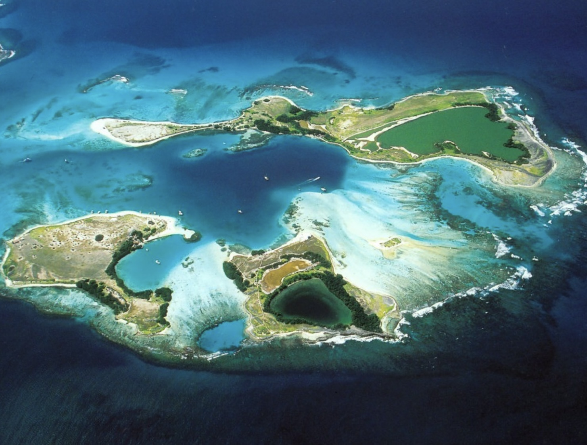
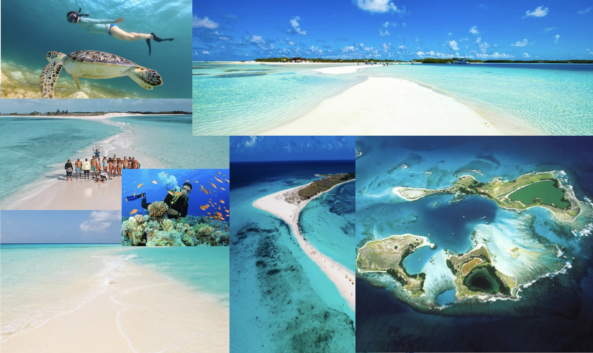

Los Roques
The Los Roques archipelago is a small group of Caribbean islands and sandbanks located approx. 80 miles north of Caracas. The islands extend over a total area of 15 square miles and are inhabited by less than 2000 people. The islands also boast an extensive coral reef with 42 coral islands and hundreds of sandbanks. Los Roques is among the most important eco-touristic destinations in Venezuela due to its pristine coral reef, and the fact that it is the meeting point of over 50 species of migratory birds, including pelicans and pink flamingos, while underwater one may see dolphins, whales, manta rays, and sea turtles. Due to its remote location, travel to Los Roques can also be quite difficult. Traveling to Los Roques requires a short 35 minute flight from the Simon Bolivar airport in Caracas and costs around $100. From there, travelers will need to rent a boat to get off of the main island and see all of the natural beauty that the islands offer.
